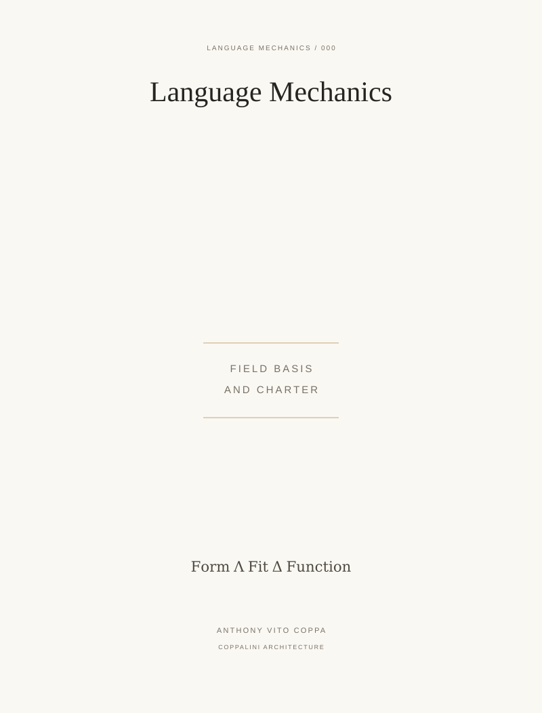

LM 000 / Formal-basis paper / COVER ARTWORK
Language Mechanics


A charter titleplate retains the zero-form position in the series. The defining grammar is printed once below.
LM 000 / Formal-basis paper / COVER ARTWORK

A charter titleplate retains the zero-form position in the series. The defining grammar is printed once below.